Buried in Love

"A horror dating-sim, set in a seemingly normal college with seemingly normal soulmates. That is until dates with them reveal some... eerie quirks..."
↑ TopFeatures
- Choose between Ben or Jane and go on your first (and last) date.
- Engage in character-unique minigames (Ben → Fishing, Jane → Speed Typing).
- Make meaningful choices during your date with your character of choice.
- Be warned: not everything is as it appears in this seemingly colorful, innocent world.
Project Goals
- Create a dialogue UI featuring:
- Multiple character sprites
- Multiple character names (including the player and narrator)
- Special font settings for text
- Automate text and character transition animations.
- Handle individual lines and choice sections.
- Enable easy transitions between dialogue sections and minigame sections.
Constraints
- Time: 3 weeks to build a prototype before content integration.
- Team: Sole programmer assigned to the dialogue system.
The Process
- Drew art and UI inspiration from interactive fiction games like Ace Attorney.
- Implemented the overarching dialogue system:
- Scriptable objects to manage dialogue lines and character sprite sheets
- Processor scripts to render dialogue formatting, character sprites, transition animations, and more
- Ensured files and scripts had intuitive variables for designers to fill with assets:
- Incorporated feedback on UI adjustments and serialized options in code
Encapsulating Behaviors
Encapsulated MonoBehaviour scripts into special object behaviors, and classes into special value types. Interactive fiction games typically feature scrolling text, stylized font sections, switching character sprites, and transformative animations for entering, exiting, and focusing during conversation.
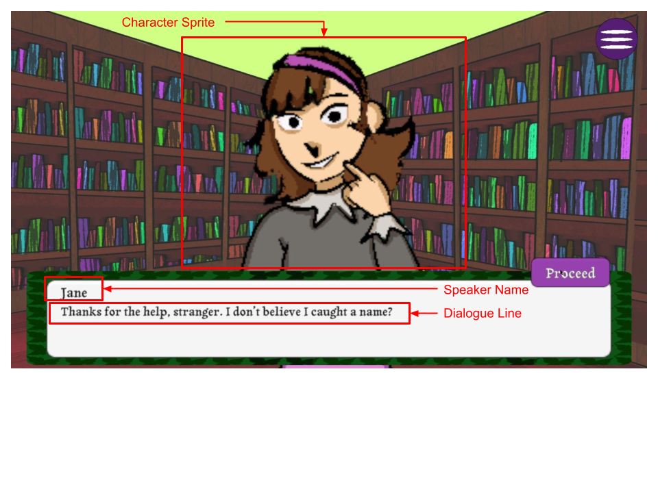
Thought Process
- Compiled a checklist of features and code assets based on team feedback and needs, drawing from references like Ace Attorney.
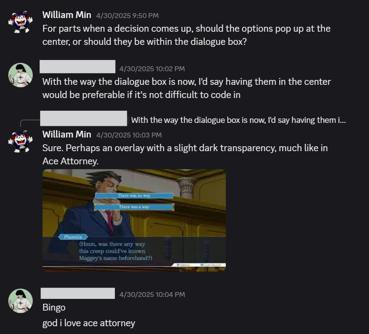
- Used Unity's component-based architecture to split dialogue system properties into MonoBehaviours and structs:
- MonoBehaviours handled in-scene objects and UI (sprites, buttons, text, spawners, etc.).
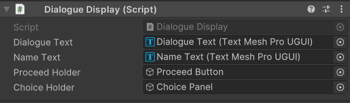
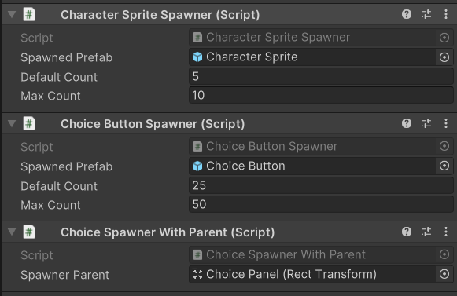
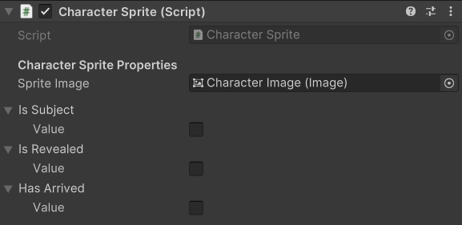
- Structs carried groups of related data and provided means to process and return new data from it.
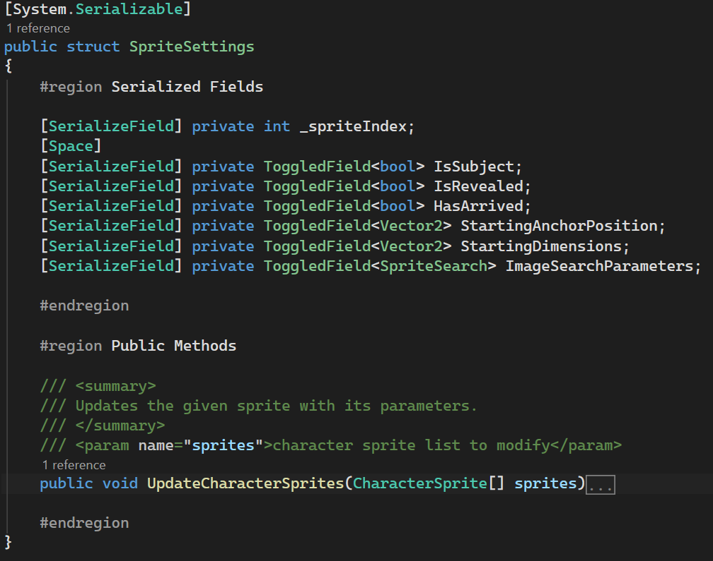
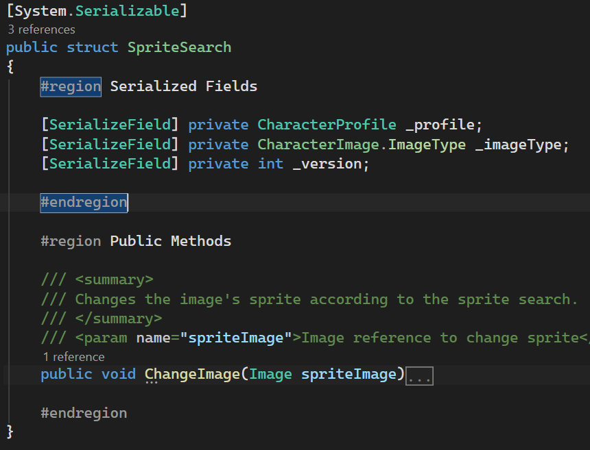
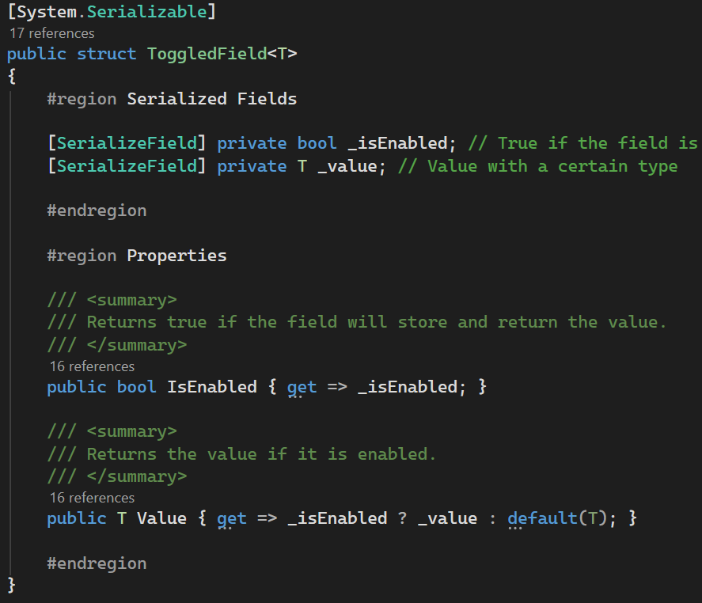
- Facilitated relations between classes through the observer pattern:
- Used
ActionandUnityEventobjects triggered at notable moments, like the start and end of a process. - Had methods act as wires that could be plugged into delegates, actions, and events on other objects.
- Relied less on constant
Update()loops for triggered actions.
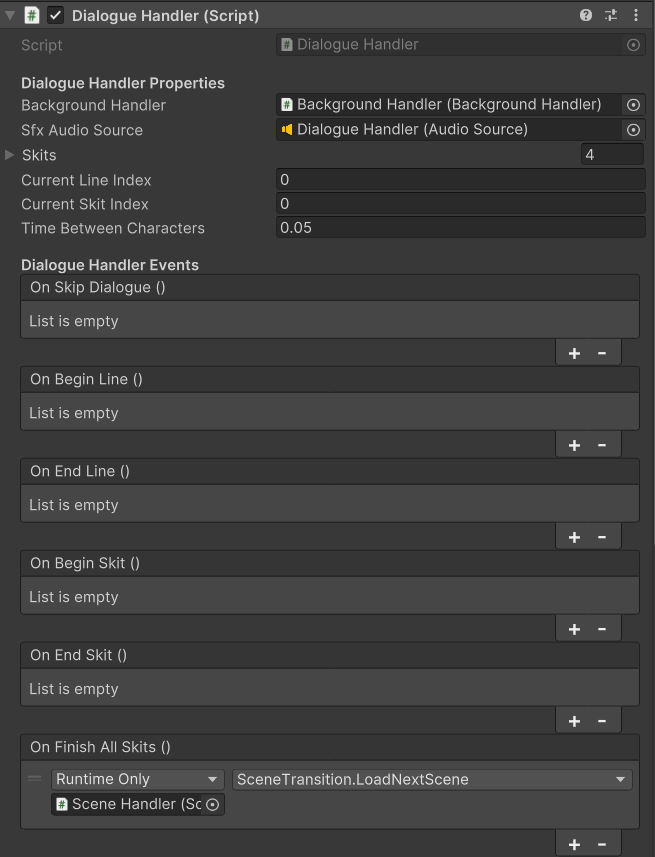
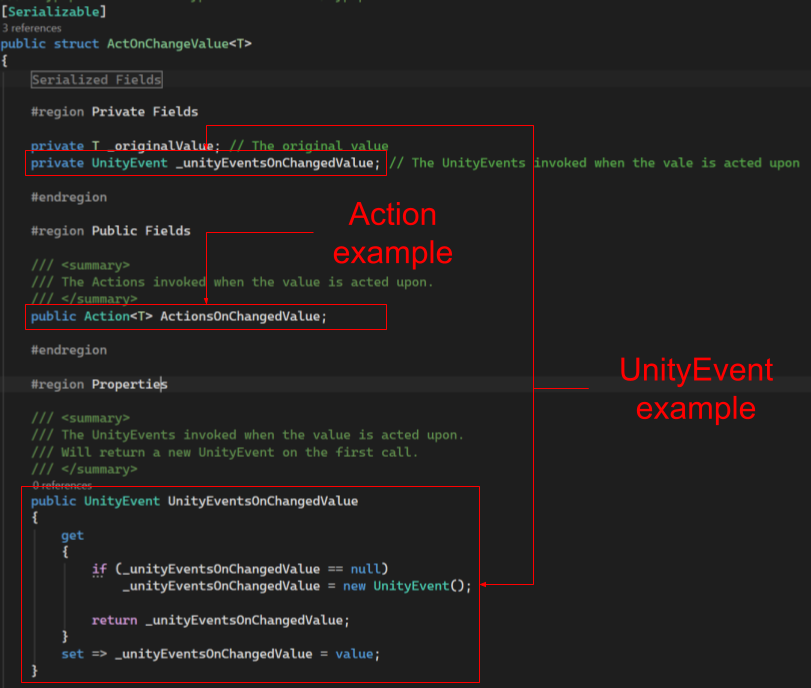
- Wrapper scripts that change a given value based on conditions, handle effects from variable changes, and trigger events accordingly.
- Spawner types to handle spawning and storing spawned objects.
- Character sprites that fade in and out, reveal or fade into black, grow and shrink, and switch between lines.
- Dialogue that scrolls out with special typology in mind, skippable by the player when they want to proceed.
Results
Data-Driven Files
Built modular scripts and data-driven files for designers to easily integrate assets. We planned for at least two campaigns, each featuring dozens of lines and characters spanning a wide range of emotions and states depicted through sprites.
Thought Process
- Dialogue Skits queue lines before moving to the next skit.
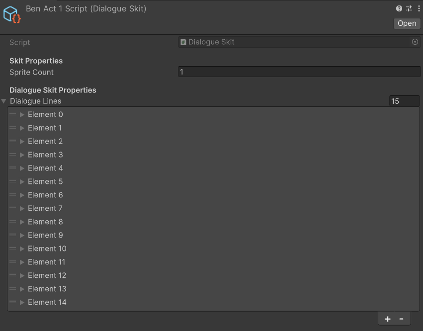
- Dialogue Lines contain the line text plus toggles for speaker names and sprite changes between lines.
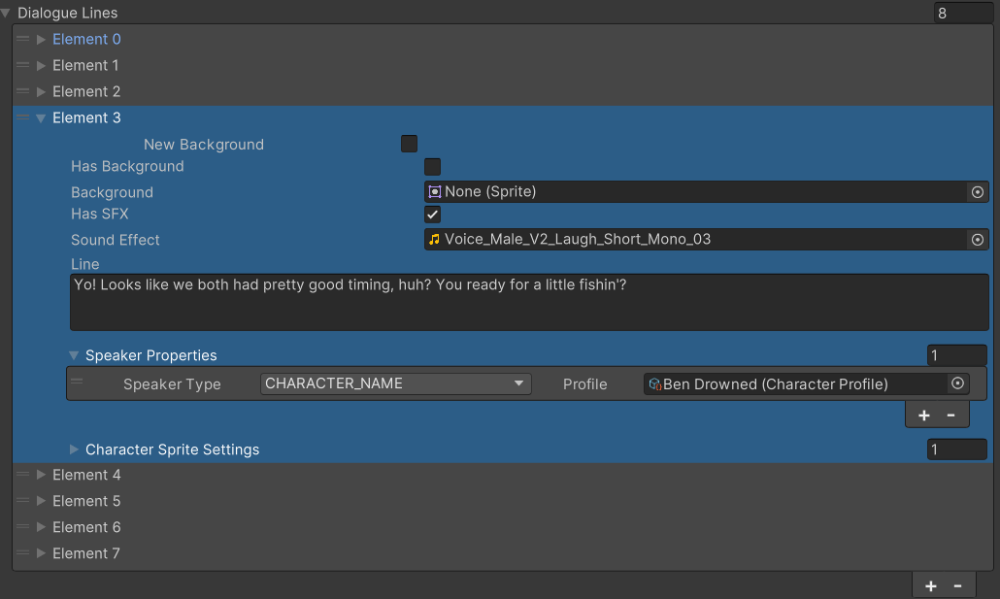
- Character Settings contain toggles and image settings that affect what character sprites are displayed and what visual effects will they have.
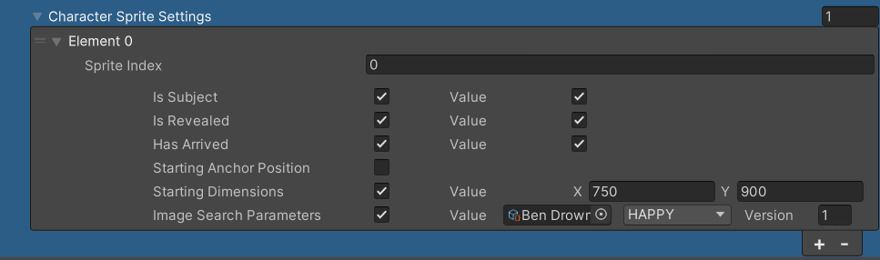
- Character Profiles each contain a name and sprites for the character's emotions.
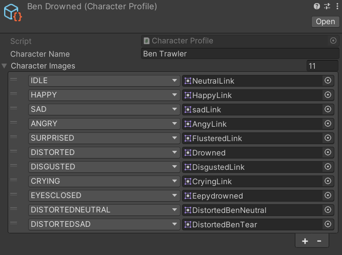
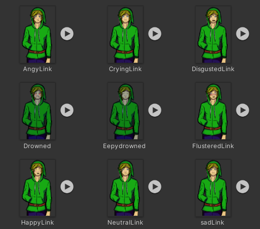
- Choice Skits contain one line and various choice prompts.

Results
- Characters and dialogue skits can be created and edited like spreadsheets within the game engine.
- Non-programmers can easily identify where to place new or changed assets.
Key Takeaways
- The project's direction required quick, sweeping changes, so keeping scripts and files as modular as possible was pivotal to development.
- Implementing events on critical actions enabled triggering other systems with minimal coupling and easy reconfiguration.
- This project showed me the tangible advantages of software design concepts like component-based architecture, the observer pattern, and single responsibility principles.